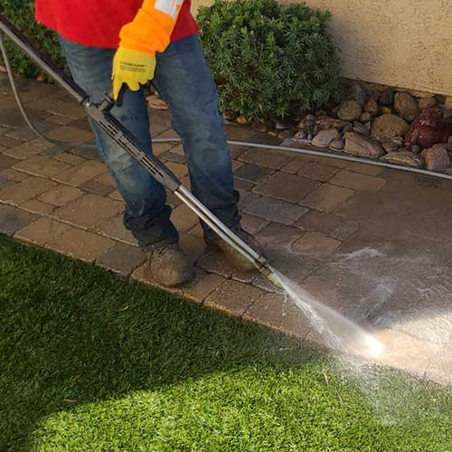
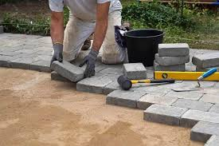
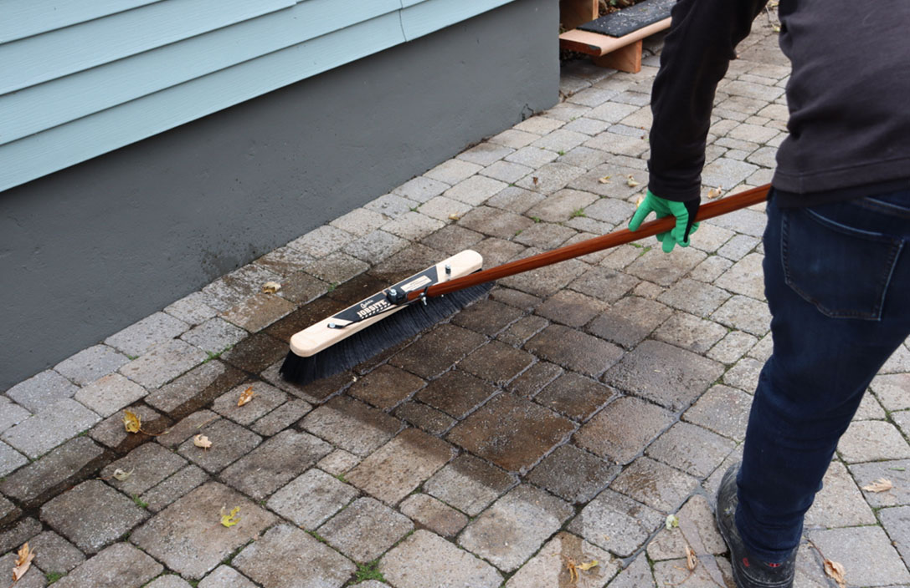
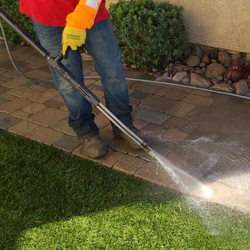
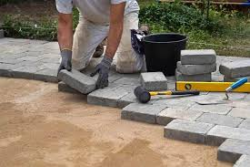
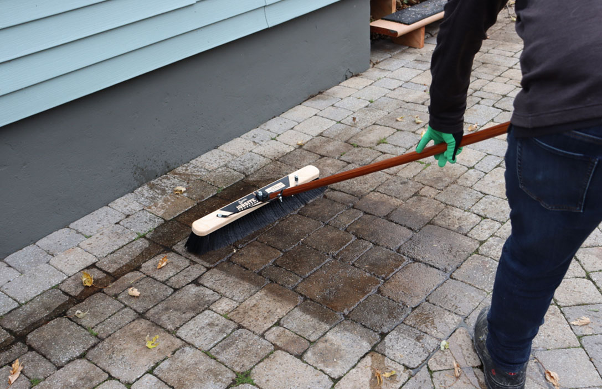

What Is Paver Installation & Maintenance?
Paver installation and maintenance involves creating durable, attractive outdoor surfaces such as patios, driveways, and walkways. Regular maintenance ensures long-lasting beauty, functionality, and safety.
Why Is Paver Installation & Maintenance Important?
- Enhances outdoor living spaces with a polished look
- Improves curb appeal and property value
- Provides durable, weather-resistant surfaces
- Reduces risk of uneven or unsafe walkways
- Extends the lifespan of your investment
Steps in a Paver Installation Project
- Planning & Design: Choose layout, paver type, and style.
- Site Preparation: Excavate and level the base area.
- Base Installation: Lay gravel and sand for stability and drainage.
- Paver Placement: Set pavers in the desired pattern.
- Finishing: Apply joint sand, compact, and seal for protection.
Signs You May Need Paver Maintenance
- Uneven, sinking, or loose pavers
- Weeds or grass growing between pavers
- Cracked, stained, or broken sections
- Poor drainage or water pooling
- Faded or worn appearance
Note: Professional installation and routine maintenance keep your pavers looking great, safe to use, and long-lasting.
 




